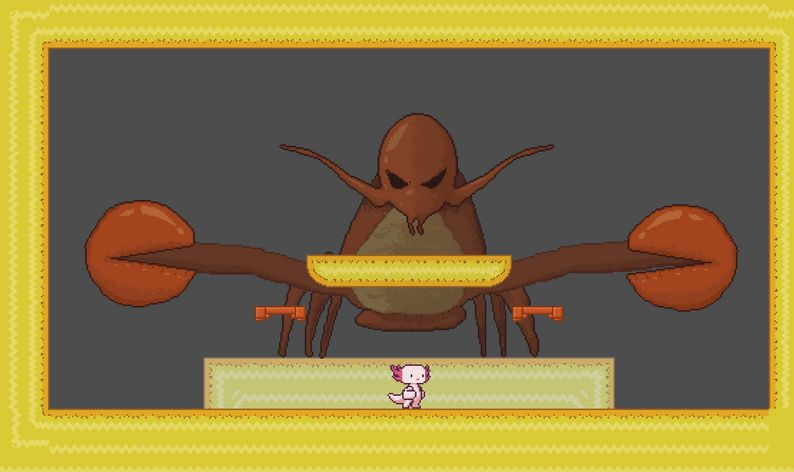

Mi Primer Videojuego
Hoy estoy emocionado de compartir mi primer videojuego, un sencillo juego de plataformas que he estado desarrollando durante los últimos meses. ¡Espero que lo disfruten!
Hoy estoy emocionado de compartir mi primer videojuego, un sencillo juego de plataformas que he estado desarrollando durante los últimos meses. ¡Espero que lo disfruten!
En este artículo, discutiré algunas de las técnicas que utilizo para mejorar mi flujo de trabajo al desarrollar videojuegos y cómo optimizar el rendimiento.
Aquí hay una lista de recursos que considero esenciales para cualquier creador de videojuegos, desde tutoriales hasta herramientas de desarrollo.
Itch.io: Considero que esta página es ideal para todos los pequeños desarrolladore , ya que tiene una muy buena comunidad , podras encontrar recursos tanto gratis como de pagaHola! Soy Anyelo Marcheco Castaño,tengo 16 años y soy un youtuber y programador. He empezado mi carrera de Youtuber hace un año y la de programador hace tiempo, pero nunca le pude dedicar a tiempo completo
El programa que utilizo para programar es Godot Engine un programa totalmente gratuito y Open Source. El cual es muy sencillo y casi intuitivo para alguien que ya haya programado en algun engine anterior. Este programa utiliza como fuente principal de script a GDscript , que es su lenguaje nativo(es muy parecido a Pythom), tambien utiliza C# y C++
Tengo un canal de Youtube como ya antes lo he mencionado, que se llama GPA035 que normalmente subo videos de Gameplays de cualquier juego. Pero pronto quiero empezar a hacer DevBlogs
Si es por decir que tengo algún proyecto diría que este Mega Axolot. Un juego que lo hice en una semana junto a DualFdexGames otra pequeña marca indie dirigida por Félix Cruz y por IdesuDD. El juego lamentablementeno fue terminado por un pequeño error, pero tengo pensado solucionarlo pronto

Bueno aqui solamente quiero darles una forma de llegar a las paginas, redes y otras cosas que me interesan o que estan aqui
 Canal de Youtube
Canal de Youtube
 Canal de WhatsApp
Canal de WhatsApp
 Página de Facebook
Página de Facebook